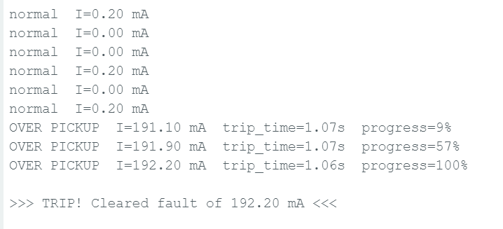
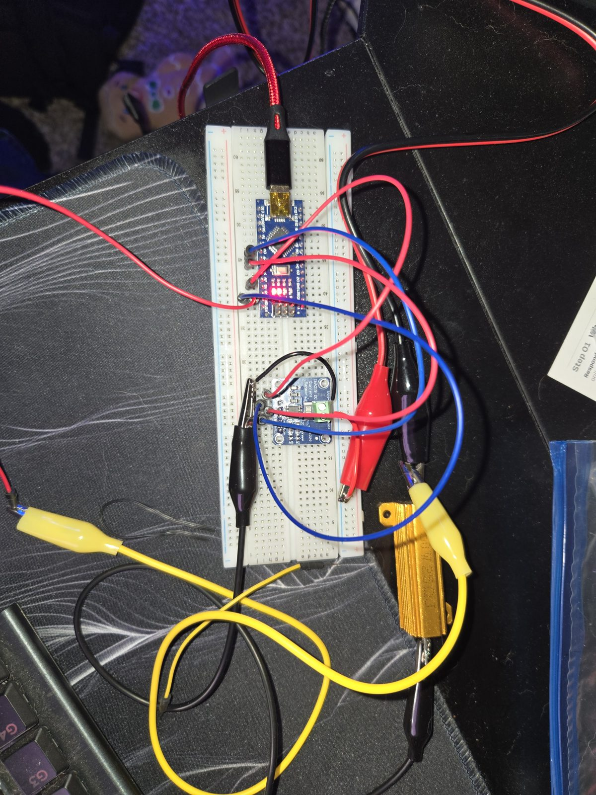

IDMT Overcurrent Relay
A working microprocessor-based inverse-time overcurrent relay — a current sensor, a microcontroller, and firmware implementing an IEC 60255 trip curve that senses real current and physically opens a contact to disconnect a load on a fault.
The overcurrent relay is the most fundamental protective device in a power system. This project implements one from the governing equation up: the same IEC 60255 inverse-time characteristic used to coordinate protective devices and set relay pickup in coordination studies — running here on real hardware, sensing real current.
It demonstrates protection at the device level. Not analyzed in software, but built, and physically validated on the bench.
- Sense. The INA219 measures load current and reports it to the microcontroller over I²C.
- Compare. Below pickup, the relay stays idle. Above pickup, it enters a timing state.
- Time (IDMT). The firmware computes the inverse-time trip delay for the measured current and integrates progress toward a trip each loop — so it keeps monitoring while timing, and backs off if the fault clears first.
- Trip. When accumulated time reaches the computed delay, the relay latches and drives an opto-isolated relay module to open its contact and disconnect the load — a real breaker action, not just an indicator.
- Reset. Once current returns below pickup, the relay resets and re-arms.
The relay sensing an overcurrent and physically opening its contact to disconnect the load — the full sense → decide → trip chain, on hardware.
The trip time follows the IEC 60255 standard-inverse curve — larger overcurrents trip faster, smaller ones trip slower:
Drag the time multiplier below and watch the curve shift. The amber points are the measured hardware results — at the relay's actual setting (TMS = 0.10) the theoretical curve runs right through them.
| Setting | Value | Meaning |
|---|---|---|
| Pickup (Ipickup) | 100 mA | Threshold above which the relay times toward a trip |
| Time multiplier (TMS) | 0.10 | Shifts the trip curve up or down in time |
| Curve constants | k = 0.14, a = 0.02 | IEC 60255 standard-inverse characteristic |
Tested across the full range of the trip characteristic. Trip time falling as current rises is the inverse-time behavior that defines an IDMT relay — confirmed on hardware.
| Condition | Measured current | Trip time | Result |
|---|---|---|---|
| Normal load | < 100 mA | — | No trip (correctly ignored) |
| Small overcurrent | 103 mA | ~20 s | Slow trip (near-pickup asymptote) |
| Moderate overcurrent | 134 mA | ~2.4 s | Faster trip |
| Large fault | 192 mA | ~1.1 s | Fast trip |


The heart of the relay: each loop it computes the IEC 60255 trip time for the measured current and integrates progress toward a trip, so it keeps monitoring while it times and backs off if the fault clears first.
// Over pickup: run the IEC 60255 IDMT timer
float M = current / I_PICKUP; // multiple of pickup
float denom = pow(M, A) - 1.0;
if (denom < 0.0001) denom = 0.0001; // guard the near-pickup singularity
float trip_time = TMS * (K / denom); // IEC 60255 trip time (seconds)
trip_accumulator += dt / trip_time; // integrate progress toward a trip
if (trip_accumulator >= 1.0) {
digitalWrite(RELAY_PIN, LOW); // open the contact — TRIP the load
}Full firmware, both demo videos, high-resolution bench photos, and the complete serial logs are in the repository.